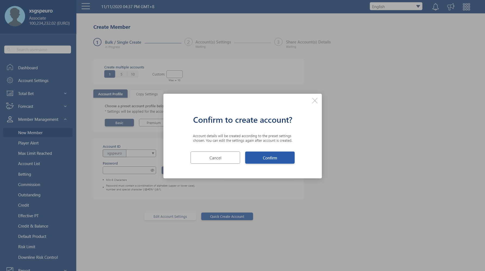
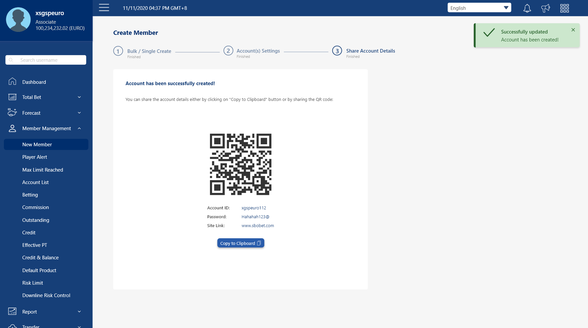

Improving player creation user flow process
Brief: To design a better system or workflow where users can:
- Login quicker
- Browse / navigate easier regardless of type of devices used
- Create player account(s) quicker
- Allow for easier passing of player account(s) details to players
Who are our users?
Brief: Our users are the agents, including MA, SMA, or VVIPs possibly who uses our agent site for:-
- Manage downline (members / players) accounts' credit / balance / commission
- Transfer downline balance
- Checking reports (winloss / statement etc)
- Member account(s) creation
User Statistics from GA
Most Visited Pages
 Most visited pages by users from 1 Sept - 31 Dec 2020 (1-10)
Most visited pages by users from 1 Sept - 31 Dec 2020 (1-10)
 Most visited pages by users from 1 Sept - 31 Dec 2020 (11-20)
Most visited pages by users from 1 Sept - 31 Dec 2020 (11-20)
Devices Used
 Devices used by users (1 Sept - 31 Dec 2020)
Devices used by users (1 Sept - 31 Dec 2020)
 Top Devices used by countries (1 Sept - 31 Dec 2020)
Top Devices used by countries (1 Sept - 31 Dec 2020)
 Devices used by Indonesia (1 Sept - 31 Dec 2020)
Devices used by Indonesia (1 Sept - 31 Dec 2020)
 Devices used by Thailand (1 Sept - 31 Dec 2020)
Devices used by Thailand (1 Sept - 31 Dec 2020)
 Devices used by Vietnam (1 Sept - 31 Dec 2020)
Devices used by Vietnam (1 Sept - 31 Dec 2020)
{kind=link}
{kind=link}
{kind=link}
{kind=link}
Form Elements Research
Form Labels
{kind=link}
{kind=link}
{kind=link}
| 1) Static Label | 2) Floating Label |
|---|---|
| Higher readability, label color is darker. | If there are any text in placeholder, it's obvious it is a placeholder. |
| Space for hint is clear cut, either below label or below input field. | No option for placeholder as it's used for label, label might be long and got cropped off the input field as well. |
| Takes up static amount of space. | Seems to be space conducive, but as the labels will move from input field to top of input field, so theoretically works the same as static labels. |
 |
 |
Placeholder
{kind=link}
{kind=link}
{kind=link}
| 1) Placeholder / helper text (above/below field) | 2) Placeholder in input field |
|---|---|
| Would not get cut off regardless of text length. | Would get cut off if input field is shorter than placeholder length. |
| Since it's static, upon user input, the helper text is still there for user to see. | As the helper text appears in the input field, it will disappear once user input in it, it's harder to remember the text and can cause errors. |
| Higher readability, as it's of a darker color usually like label or slightly lighter. | Lighter color as it's meant to notify users that it is a placeholder and will disppear when users type into it. |
| Works for all browsers. | Placeholder attribute doesn't work in IE. |
|
|
Number Input
{kind=link}
{kind=link}
{kind=link}
| 1) Tiny spinner in input | 2) Number widget | 3) Range Slider |
|---|---|---|
| Easy to make small adjustments. | Easy to make small adjustments. | Hard to make small adjustments or slide to a specific number. |
| Good for precise input value. | Unable to make a precise input value. | Have the option to input precise value or slide. |
| No limitations for how wide the range of number can be. | Hard to go through all the values if there are a huge amount of number in options. | No limitations for how wide the range of number can be, but also the wider the range, the harder it is to slide to a precise number, thus falling back on the input field. |
|
|
|
| Number widget can be used for functionalities that does not have a lot of options and the options are of fixed values. | ||
Select Dropdown
{kind=link}
{kind=link}
| 1) Classic select dropdown | 2) Select dropdown with search |
|---|---|
| Able to show all available options, prevent mistypes / errors. | Able to show all available options, prevent mistypes / errors. |
| Requires a lot of scrolling if there are a lot of options. | Able to use search if user know what to look for, search can filter out some of the options so the list is not as long. |
|
|
| Both can be used since search is not really required for select dropdowns that does not have a lot of options. | |
Heuristic Evaluation
1. Login Flow
 Login Page
Login Page
{kind=link}
{kind=link}
| Current Libra | Revamp |
|---|---|
| No help for lost username / password | Provide help to retrieve lost username / password with contact us |
| Unable to see what has been entered in password field already | An eye icon to see what has already been entered in password field |
| NA | Option to save login so user will stay logged in for 7 days |
|
Heuristic violated:
|
Heuristic applied:
|
 Terms & Conditions Page
Terms & Conditions Page
{kind=link}
| Current Libra | Revamp |
|---|---|
| After successful login, user will be brought to this page, have to click on "I agree" to proceed on to next step | Appears as an optional item below login fields |
|
Heuristic violated:
|
Heuristic applied:
|
2. Member Creation Flow
 Dashboard
Dashboard
 Dashboard (Revamp)
Dashboard (Revamp)
| Current Libra | Revamp |
|---|---|
| Need to look out for where to navigate to go to create an account | Provides quick action which can be customized later on once user gets more familiarized with the site |
|
Heuristic violated:
|
Heuristic applied:
|
 Create Member Page
Create Member Page
{kind=link}
1) Create Member Page (Revamp)
{kind=link}
2) Create Member Page (Revamp) - Profile / Product settings
{kind=link}
3) Create Member Page (Revamp) - Share settings
| Current Libra | Revamp |
|---|---|
| A. Need prior knowledge of which account to copy settings from | 1) Same, but proposed account profile, so user would be able to create a setting and saved as a new profile, for future account creation |
| B. Have to try multiple times for a unique ID that has not been used | 1) Show all possible combinations only |
| C. Have to scroll to bottom to check password requirements, unable to show what has been typed | 1) Password requirements is directly below passwords field to show requirements, eye icon to show what has been entered |
| D. Optional but not stated | 2) Optional label in accordion title |
| E. Outdated recaptcha, hard to read | 1) Removed |
| F. Unorthodox requirement of password not allowed to contain first / last name and username | 1) Already moved to below passwords field; a "Generate password" to help quicker generate random password that fulfills the requirements |
|
Heuristic violated:
|
Heuristic applied:
|
Clicks / User Actions Tracking
Current Libra
Note: number listed is the number of clicks applied by user.


2. Click on Password field -> enter password
(Additional 2 clicks might occur for changing of language)
3. Click on Sign in button
4. Click to agree to T&C
(Or click to disagree and start from login page again)


6. Click on New Member to go to create member page
7. Click on 1st Digit field, after filling in, focus will automatically go to the subsequent field
8. Click on Submit button
Quick Creation w/o Copy Settings


10: Click on options shown from 9
11&12: Same as 9&10
13&14: Same as 9&10
15: Click on password field -> enter password
(password might not pass, scroll down to check password policy)
16: Click on validation field -> enter validation code
(old style validation might not be clear for certain images)
17: Click on Create button 18: Click on OK button to acknowledge successful account creation
Number of clicks for quick creation w/o copy settings: 9
Quick Creation with Copy Settings


10: Click on 1 of the options to copy settings from
11: Click on copy settings button to confirm action
12: Click on 1st field to show other options
13: Click on options shown from 12
14&15: Same as 12&13
16&17: Same as 12&13
18: Click on password field -> enter password
19: Click on validation field -> enter validation

Number of clicks just for quick creation with copy settings: 12
Clicks / User Actions Tracking Cont.
Libra Revamp
Note: number listed is the number of clicks applied by user.


2. Click on Password field -> enter password
(Additional 2 clicks might occur for changing of language)
3. Click on Sign in button
(Additional click for if users want to check out the T&C page)
4. Click on quick action's Create Member to go directly to create member page
Optional 4, 5: A longer route to go to Create Member page from menu bar

Quick Creation w/o Copy Settings


8. Click on button to generate password
9. Click on Quick Create Account
10. Click on OK button
Number of clicks just for quick creation w/o copy settings: 5
Quick Creation with Copy Settings


7, 8. Click on copy settings field to show account list options and choose 1 of the options 9, 10. Click on Account ID field to show options for available account ID and click on 1 of the options
11. Click on button to generate password
12. Click on Quick Create Account
13. Click on OK button
Number of clicks just for quick creation w/o copy settings: 8